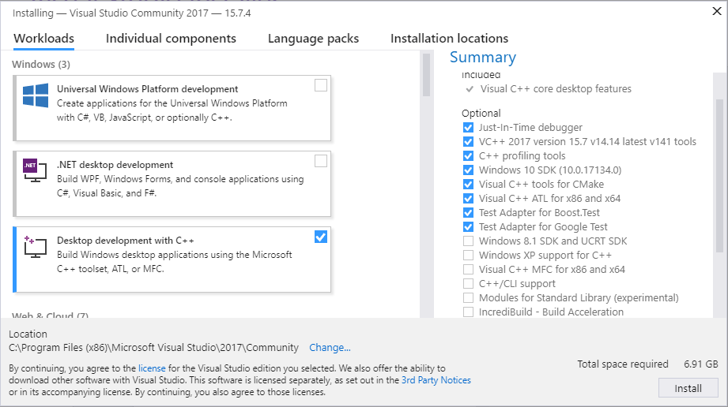

Windows (source)
This guide is about how to setup a development environment for ROS 2 on Windows.
System requirements
Only Windows 10 is supported.
Language support
Make sure you have a locale which supports UTF-8.
For example, for a Chinese-language Windows 10 installation, you may need to install an English language pack.
Installing prerequisites
Install Chocolatey
Chocolatey is a package manager for Windows, install it by following their installation instructions:
https://chocolatey.org/install
You’ll use Chocolatey to install some other developer tools.
Install Python
Open a Command Prompt and type the following to install Python via Chocolatey:
choco install -y python --version 3.8.3
Note
Chocolatey will install Python in C:\Python38, and the rest of the installation expects it to be there.
If you’ve installed Python somewhere else, you must copy or link it to that location.
Install Visual C++ Redistributables
Open a Command Prompt and type the following to install them via Chocolatey:
choco install -y vcredist2013 vcredist140
Install OpenSSL
Open a Command Prompt and type the following to install OpenSSL via Chocolatey:
choco install -y openssl --version 1.1.1.2100
This command sets an environment variable that persists over sessions:
setx /m OPENSSL_CONF "C:\Program Files\OpenSSL-Win64\bin\openssl.cfg"
You will need to append the OpenSSL-Win64 bin folder to your PATH. You can do this by clicking the Windows icon, typing “Environment Variables”, then clicking on “Edit the system environment variables”. In the resulting dialog, click “Environment Variables”, then click “Path” on the bottom pane, finally click “Edit” and add the path below.
C:\Program Files\OpenSSL-Win64\bin\
Install Visual Studio
Install Visual Studio 2019.
If you already have a paid version of Visual Studio 2019 (Professional, Enterprise), skip this step.
Microsoft provides a free of charge version of Visual Studio 2019, named Community, which can be used to build applications that use ROS 2. You can download the installer directly through this link.
Make sure that the Visual C++ features are installed.
An easy way to make sure they’re installed is to select the Desktop development with C++ workflow during the install.

Make sure that no C++ CMake tools are installed by unselecting them in the list of components to be installed.
Install OpenCV
Some of the examples require OpenCV to be installed.
You can download a precompiled version of OpenCV 3.4.6 from https://github.com/ros2/ros2/releases/download/opencv-archives/opencv-3.4.6-vc16.VS2019.zip .
Assuming you unpacked it to C:\opencv, type the following on a Command Prompt (requires Admin privileges):
setx /m OpenCV_DIR C:\opencv
Since you are using a precompiled ROS version, we have to tell it where to find the OpenCV libraries.
You have to extend the PATH variable to C:\opencv\x64\vc16\bin.
Install dependencies
There are a few dependencies not available in the Chocolatey package database. In order to ease the manual installation process, we provide the necessary Chocolatey packages.
As some chocolatey packages rely on it, we start by installing CMake
choco install -y cmake
You will need to append the CMake bin folder C:\Program Files\CMake\bin to your PATH.
Please download these packages from this GitHub repository.
asio.1.12.1.nupkg
bullet.3.17.nupkg
cunit.2.1.3.nupkg
eigen.3.3.4.nupkg
tinyxml-usestl.2.6.2.nupkg
tinyxml2.6.0.0.nupkg
Once these packages are downloaded, open an administrative shell and execute the following command:
choco install -y -s <PATH\TO\DOWNLOADS\> asio cunit eigen tinyxml-usestl tinyxml2 bullet
Please replace <PATH\TO\DOWNLOADS> with the folder you downloaded the packages to.
First upgrade pip and setuptools:
python -m pip install -U pip setuptools==59.6.0
Now install some additional python dependencies:
python -m pip install -U catkin_pkg cryptography empy importlib-metadata lark==1.1.1 lxml matplotlib netifaces numpy opencv-python PyQt5 pillow psutil pycairo pydot pyparsing==2.4.7 pyyaml rosdistro
Install Qt5
Download the 5.12.X offline installer from Qt’s website.
Run the installer.
Make sure to select the MSVC 2017 64-bit component under the Qt -> Qt 5.12.12 tree.
Finally, in an administrator cmd.exe window set these environment variables.
The commands below assume you installed it to the default location of C:\Qt.
setx /m Qt5_DIR C:\Qt\Qt5.12.12\5.12.12\msvc2017_64
setx /m QT_QPA_PLATFORM_PLUGIN_PATH C:\Qt\Qt5.12.12\5.12.12\msvc2017_64\plugins\platforms
Note
This path might change based on the installed MSVC version, the directory Qt was installed to, and the version of Qt installed.
RQt dependencies
To run rqt_graph you need to download and install Graphviz. The installer will ask if to add graphviz to PATH, choose to either add it to the current user or all users.
Additional prerequisites
When building from source you’ll need a few additional prerequisites installed.
Install additional prerequisites from Chocolatey
choco install -y cppcheck curl git winflexbison3
You will need to append the Git cmd folder C:\Program Files\Git\cmd to the PATH (you can do this by clicking the Windows icon, typing “Environment Variables”, then clicking on “Edit the system environment variables”.
In the resulting dialog, click “Environment Variables”, the click “Path” on the bottom pane, then click “Edit” and add the path).
Install Python prerequisites
Installing additional Python dependencies:
pip install -U colcon-common-extensions coverage flake8 flake8-blind-except flake8-builtins flake8-class-newline flake8-comprehensions flake8-deprecated flake8-docstrings flake8-import-order flake8-quotes mock mypy==0.931 pep8 pydocstyle pytest pytest-mock vcstool
Install miscellaneous prerequisites
Next install xmllint:
Download the 64 bit binary archives of
libxml2(and its dependenciesiconvandzlib) from https://www.zlatkovic.com/projects/libxml/Unpack all archives into e.g.
C:\xmllintAdd
C:\xmllint\binto thePATH.
Get the ROS 2 code
Now that we have the development tools we can get the ROS 2 source code.
First setup a development folder, for example C:\humble:
Note
It is very important that the chosen path is short, due to the short default Windows path limits (260 characters). To allow longer paths, see https://learn.microsoft.com/en-us/windows/win32/fileio/maximum-file-path-limitation?tabs=registry.
md \humble\src
cd \humble
Get the ros2.repos file which defines the repositories to clone from:
vcs import --input https://raw.githubusercontent.com/ros2/ros2/humble/ros2.repos src
Install additional DDS implementations (optional)
Fast DDS is bundled with the ROS 2 source and will always be built unless you put an COLCON_IGNORE file in the src\eProsima folder.
If you would like to use another DDS or RTPS vendor besides the default, you can find instructions here.
Build the ROS 2 code
To build ROS 2 you will need a Visual Studio Command Prompt (“x64 Native Tools Command Prompt for VS 2019”) running as Administrator.
To build the \humble folder tree:
colcon build --merge-install
Note
We’re using --merge-install here to avoid a PATH variable that is too long at the end of the build.
If you’re adapting these instructions to build a smaller workspace then you might be able to use the default behavior which is isolated install, i.e. where each package is installed to a different folder.
Note
If you are doing a debug build use python_d path\to\colcon_executable colcon.
See Extra stuff for debug mode for more info on running Python code in debug builds on Windows.
Environment setup
Start a command shell and source the ROS 2 setup file to set up the workspace:
call C:\humble\install\local_setup.bat
This will automatically set up the environment for any DDS vendors that support was built for.
It is normal that the previous command, if nothing else went wrong, outputs “The system cannot find the path specified.” exactly once.
Test and run
Note that the first time you run any executable you will have to allow access to the network through a Windows Firewall popup.
You can run the tests using this command:
colcon test --merge-install
Note
--merge-install should only be used if it was also used in the build step.
Afterwards you can get a summary of the tests using this command:
colcon test-result
To run the examples, first open a clean new cmd.exe and set up the workspace by sourcing the local_setup.bat file.
Then, run a C++ talker:
call install\local_setup.bat
ros2 run demo_nodes_cpp talker
In a separate shell you can do the same, but instead run a Python listener:
call install\local_setup.bat
ros2 run demo_nodes_py listener
You should see the talker saying that it’s Publishing messages and the listener saying I heard those messages.
This verifies both the C++ and Python APIs are working properly.
Hooray!
Note
It is not recommended to build in the same cmd prompt that you’ve sourced the local_setup.bat.
Next steps after installing
Continue with the tutorials and demos to configure your environment, create your own workspace and packages, and learn ROS 2 core concepts.
Additional RMW implementations (optional)
The default middleware that ROS 2 uses is Fast DDS, but the middleware (RMW) can be replaced at runtime.
See the guide on how to work with multiple RMWs.
Extra stuff for Debug mode
If you want to be able to run all the tests in Debug mode, you’ll need to install a few more things:
To be able to extract the Python source tarball, you can use PeaZip:
choco install -y peazip
You’ll also need SVN, since some of the Python source-build dependencies are checked out via SVN:
choco install -y svn hg
You’ll need to quit and restart the command prompt after installing the above.
Get and extract the Python 3.8.3 source from the
tgz:To keep these instructions concise, please extract it to
C:\dev\Python-3.8.3
Now, build the Python source in debug mode from a Visual Studio command prompt:
cd C:\dev\Python-3.8.3\PCbuild
get_externals.bat
build.bat -p x64 -d
Finally, copy the build products into the Python38 installation directories, next to the Release-mode Python executable and DLL’s:
cd C:\dev\Python-3.8.3\PCbuild\amd64
copy python_d.exe C:\Python38 /Y
copy python38_d.dll C:\Python38 /Y
copy python3_d.dll C:\Python38 /Y
copy python38_d.lib C:\Python38\libs /Y
copy python3_d.lib C:\Python38\libs /Y
copy sqlite3_d.dll C:\Python38\DLLs /Y
for %I in (*_d.pyd) do copy %I C:\Python38\DLLs /Y
Now, from a fresh command prompt, make sure that
python_dworks:
python_d -c "import _ctypes ; import coverage"
Once you have verified the operation of
python_d, it is necessary to reinstall a few dependencies with the debug-enabled libraries:
python_d -m pip install --force-reinstall https://github.com/ros2/ros2/releases/download/numpy-archives/numpy-1.18.4-cp38-cp38d-win_amd64.whl
python_d -m pip install --force-reinstall https://github.com/ros2/ros2/releases/download/lxml-archives/lxml-4.5.1-cp38-cp38d-win_amd64.whl
To verify the installation of these dependencies:
python_d -c "from lxml import etree ; import numpy"
When you wish to return to building release binaries, it is necessary to uninstall the debug variants and use the release variants:
python -m pip uninstall numpy lxml
python -m pip install numpy lxml
To create executables python scripts(.exe), python_d should be used to invoke colcon
python_d path\to\colcon_executable build
Hooray, you’re done!
Stay up to date
See Maintain source checkout to periodically refresh your source installation.
Troubleshooting
Troubleshooting techniques can be found here.
Uninstall
If you installed your workspace with colcon as instructed above, “uninstalling” could be just a matter of opening a new terminal and not sourcing the workspace’s
setupfile. This way, your environment will behave as though there is no Humble install on your system.If you’re also trying to free up space, you can delete the entire workspace directory with:
rmdir /s /q \ros2_humble